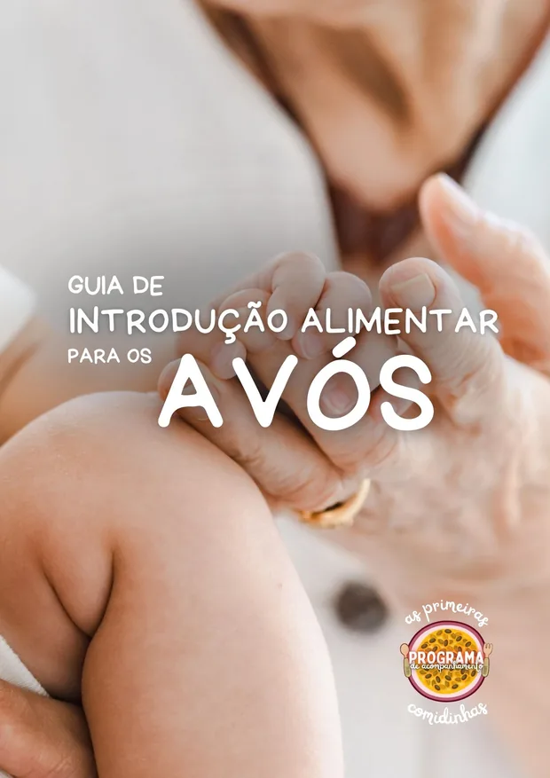
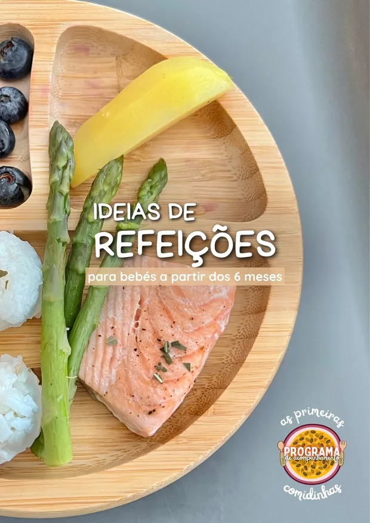
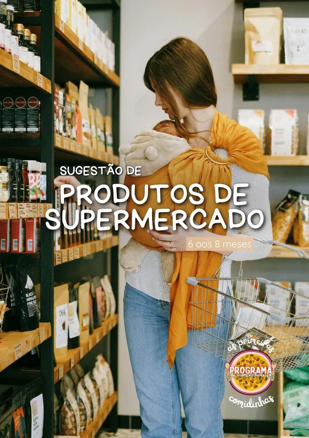
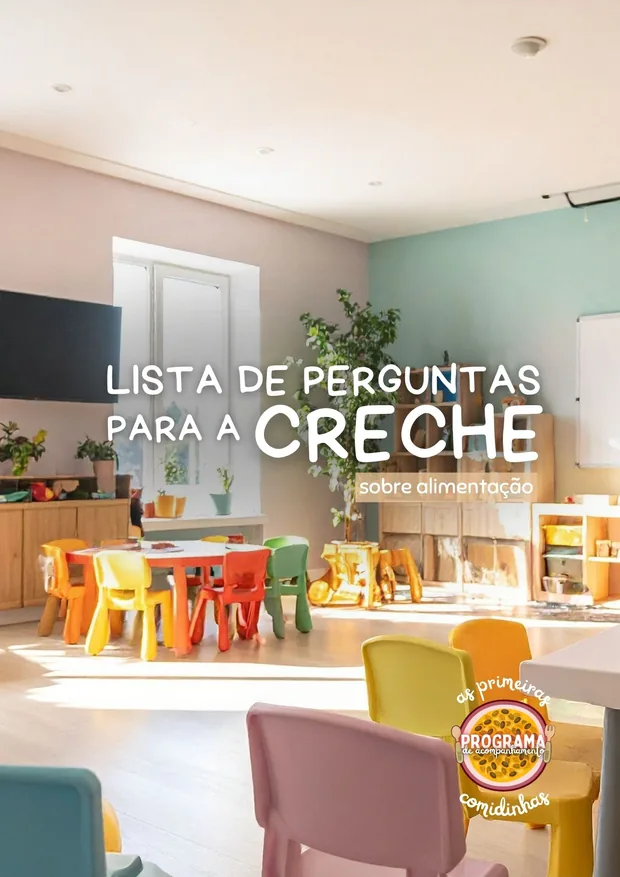
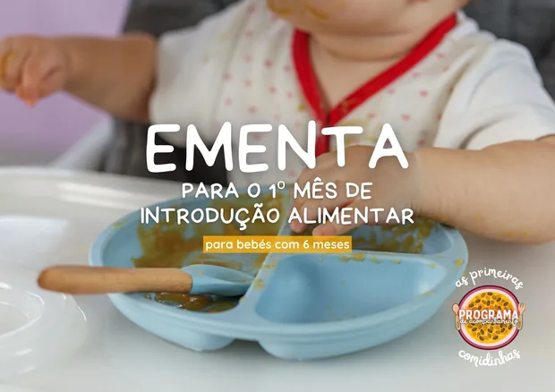
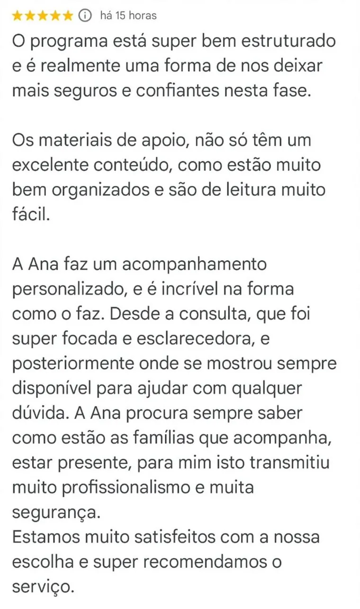
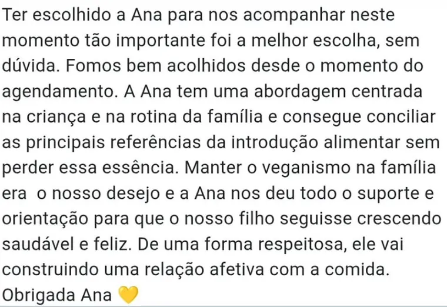
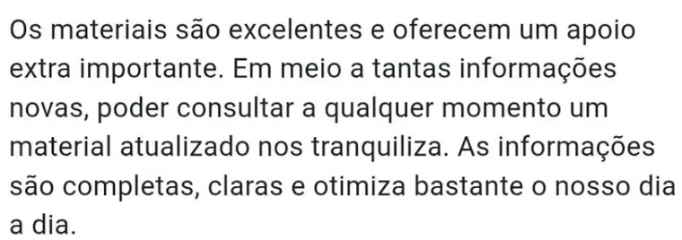
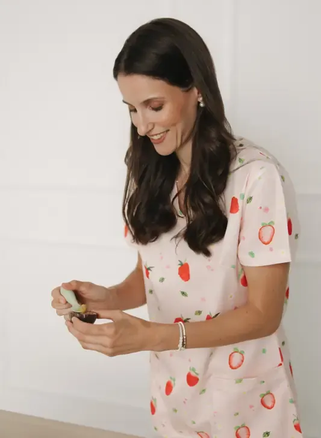
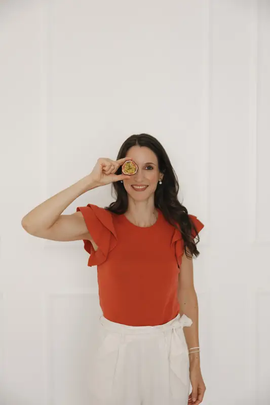

Para famílias que querem viver a introdução alimentar com a tranquilidade de saber que têm uma nutricionista pediátrica ao seu lado sempre que precisam.
Um acompanhamento personalizado que combina conhecimento, consultas de introdução alimentar individuais e apoio diário próximo para que nunca tenhas de tomar decisões sobre a alimentação do teu bebé sem orientação.
A introdução alimentar é uma fase única.
Mas também pode ser uma das fases em que surgem mais dúvidas e em que os pais andam mais ansiosos e perdidos.
Porque cada bebé é diferente.
E há dúvidas que nenhum vídeo consegue responder.
Porque dependem do teu bebé. Da tua família. Da vossa realidade.
Este programa é especialmente indicado para ti se:
Foi precisamente para estas famílias que nasceu o Programa de Acompanhamento As Primeiras Comidinhas. Um programa pensado para que tenhas uma nutricionista pediátrica ao teu lado durante toda esta fase. Alguém que conhece o teu bebé e a vossa realidade, e que te ajuda a adaptar todas as recomendações às necessidades específicas da tua família.
Porque cada bebé é único.
Não existem 2 bebés a fazer a introdução alimentar de forma igual, mas este é só um exemplo do caminho que podemos fazer juntas(os):
Recebes o acesso imediato ao curso As Primeiras Comidinhas, para começares desde logo a preparar a introdução alimentar do teu bebé com confiança e ao teu ritmo.
Recebes também acesso à área exclusiva dos membros do Programa de Acompanhamento, onde encontrarás conteúdos exclusivos em vídeo e e-books, criados para complementar as consultas e apoiar-te ao longo de toda esta fase.
Antes da primeira consulta, vais preencher um questionário que me permitirá conhecer melhor o teu bebé, a sua história clínica, as vossas principais preocupações, expetativas e objetivos.
Assim, consigo preparar antecipadamente a consulta e garantir que o acompanhamento é verdadeiramente personalizado desde o primeiro dia.
Idealmente antes de começar a introdução alimentar ou nas primeiras semanas após início.
É nesta consulta que esclarecemos todas as tuas dúvidas iniciais e definimos, em conjunto, a melhor estratégia para iniciar (ou dar continuidade) à introdução alimentar do teu bebé. Com base na informação recolhida previamente, recebes orientações totalmente adaptadas à vossa realidade e saímos da consulta com um plano claro para os próximos passos.
Com base na informação recolhida na consulta, recebes um guia alimentar totalmente adaptado ao teu bebé, com orientações práticas e personalizadas para te ajudar a iniciar esta fase com muito mais confiança.
Ao longo do acompanhamento, este guia vai sendo atualizado sempre que necessário, acompanhando a evolução do teu bebé e as novas etapas da introdução alimentar.
Porque gosto de celebrar convosco o início desta nova etapa e tornar esta experiência ainda mais especial.
* apenas disponível em Portugal continental e ilhas
Por volta dos 8-9 meses
Avaliamos a evolução da introdução alimentar, ajustamos o número e composição das refeições e o aporte de leite, atualizamos o guia alimentar e adaptamos as recomendações às necessidades desta nova fase.
Por volta dos 12 meses
Preparamos a transição para a alimentação da família, ajustamos o dia alimentar do bebé de acordo com as novas necessidades nutricionais, atualizamos novamente o guia alimentar e respondemos aos desafios que entretanto possam ter surgido.
Por volta dos 15-18 meses
Continuamos a acompanhar a evolução da alimentação, ajustando o plano sempre que necessário. Esta é uma fase em que surgem com frequência os primeiros sinais de neofobia alimentar e seletividade. Nesta etapa, a orientação aos pais é fundamental para aprender a lidar com estas mudanças de forma adequada e prevenir a instalação de dificuldades alimentares evitáveis.
Por volta dos 24 meses
Revemos todo o percurso realizado até aqui, atualizamos o guia alimentar de acordo com as necessidades nutricionais desta nova fase do desenvolvimento e preparamos a família para os desafios que se seguem, para que continuem a promover uma alimentação nutricionalmente completa e uma relação saudável e positiva com a comida.
Durante este caminho terás ainda acesso:
Estarei disponível durante todo o acompanhamento para te acompanhar via WhatsApp.
As dúvidas nem sempre surgem no dia da consulta. Surgem quando preparas uma refeição, quando aparece uma reação inesperada, quando o teu bebé recusa um alimento ou quando simplesmente precisas de confirmar se estás no caminho certo.
Um guia completo e prático, organizado em seis módulos, que te acompanha desde a preparação da introdução alimentar até aos desafios que podem surgir depois dos 12 meses.
Com aulas curtas, gravadas numa linguagem clara e acessível, vais aprender:
Terás acesso ao curso durante 12 meses, para veres e reveres os conteúdos sempre que precisares.
Para além de todo o conteúdo do curso As Primeiras Comidinhas, tens ainda acesso a conteúdo exclusivo como masterclasses, e-books e outros recursos complementares, criados para apoiar as consultas e responder às necessidades que vão surgindo ao longo do acompanhamento.





Neste programa encontras presença, orientação e acompanhamento ao longo de toda a introdução alimentar do teu bebé - para que não te sintas sozinha em nenhuma fase ou desafio.
397€
ou 99,25€ x4
IVA incluído
547€
ou 136,75€ x4
IVA incluído
Não vamos apenas aprender a introduzir alimentos
de forma segura e prática…Vamos criar as bases de uma
relação que dura a vida toda:A relação com a comida!





Sou Nutricionista desde 2013 (CP 2069N), Pós-Graduada em Nutrição Pediátrica e Escolar, com formação especializada em introdução alimentar, seletividade e recusa alimentar.
Ao longo dos últimos anos acompanhei muitas famílias que chegaram até mim exatamente onde talvez tu estejas agora: com dúvidas, medo de errar e sem saber em quem confiar para iniciar a introdução alimentar.
No entanto, a minha maior aprendizagem não aconteceu nas formações nem no consultório.
Aconteceu em casa! Sou mãe de 2 crianças e vivi duas experiências de introdução alimentar completamente diferentes.
A primeira fez-me perceber o quanto ainda existem tantos mitos e recomendações desatualizadas sobre a diversificação alimentar dos bebés, e despertou em mim a vontade de aprofundar-me ainda mais nesta área e agarrar a missão do combate à desinformação. A segunda mostrou-me que, mesmo quando já sabemos muito sobre o tema, cada bebé é único e terá os seus próprios desafios – que nos fazem ter de saber gerir MUITO bem as nossas expetativas.
Foi precisamente daquilo que aprendi ao acompanhar famílias, da experiência enquanto mãe e da formação contínua nesta área que nasceu o Programa As Primeiras Comidinhas. Para reunir num único lugar as recomendações mais atualizadas e apoio profissional próximo, para que as famílias possam tomar decisões mais informadas e viver a introdução alimentar dos seus bebés com muito mais confiança e tranquilidade.
O Programa de Acompanhamento As Primeiras Comidinhas inclui muito mais do que consultas.
Ao aderires ao programa terás acesso a:
Mas, mais do que isto, inclui a tranquilidade de seres acompanhada por uma Nutricionista Pediátrica com experiência clínica e que também conhece esta fase enquanto mãe.
Alguém que estará ao teu lado para adaptar cada recomendação ao teu bebé e ajudar-te a viver a introdução alimentar com muito mais confiança e serenidade.
Todas as consultas são realizadas online.
A primeira consulta permite conhecer o teu bebé, avaliar o estado nutricional, perceber a vossa história e realidade e definir um plano adaptado às vossas necessidades.
As consultas seguintes servem para ir acompanhando a evolução da introdução alimentar, adaptar a alimentação às necessidades do bebé em cada etapa e responder às dúvidas e desafios que vão surgindo.
Os agendamentos são feitos diretamente com a Nutricionista, sendo possível adaptar a periodicidade das consultas às necessidades de cada família.
Sim.
O programa foi pensado para acompanhar famílias desde o início da introdução alimentar até aos 24 meses.
Mesmo que o teu bebé já tenha começado, vais continuar a beneficiar das consultas, do acompanhamento personalizado e de todo o conteúdo do curso, que aborda as diferentes etapas da alimentação ao longo destes primeiros dois anos de vida.
O período de acompanhamento começa na data da tua inscrição, independentemente da idade do bebé.
A introdução alimentar envolve diferentes áreas do desenvolvimento infantil e, por isso, pode beneficiar do contributo de vários profissionais de saúde.
No entanto, quando falamos de alimentação, necessidades nutricionais, composição das refeições, introdução dos alimentos e adaptação da alimentação a diferentes idades e situações clínicas, o Nutricionista é o profissional de saúde com formação específica nesta área.
O meu objetivo não é substituir o trabalho de outros profissionais, mas complementá-lo. É por isso que, no curso As Primeiras Comidinhas encontras também conteúdos desenvolvidos por profissionais de outras áreas, porque acredito que a introdução alimentar deve ser acompanhada de uma forma verdadeiramente multidisciplinar.
Se já adquiriste o curso As Primeiras Comidinhas e sentes que gostarias de um acompanhamento mais próximo e personalizado, podes aderir ao Programa de Acompanhamento em qualquer momento.
O valor que investiste no curso será descontado ao valor do programa, para que não pagues duas vezes pelo mesmo conteúdo. Entra em contacto comigo através do WhatsApp 915 272 031.
Sim. Para tornar este acompanhamento mais acessível, podes optar pelo pagamento em prestações.
No momento da inscrição poderás escolher a modalidade de pagamento que melhor se adapta à tua família, sem que isso altere os conteúdos, o acompanhamento ou os benefícios incluídos no programa.
Não. Embora seja especialmente útil em situações como prematuridade, alergias alimentares ou alimentação vegetariana/vegana, muitas famílias procuram este programa simplesmente porque valorizam um acompanhamento mais próximo e personalizado durante toda a introdução alimentar.
O objetivo do programa é precisamente acompanhar a evolução do teu bebé. Se surgirem novos desafios ao longo da introdução alimentar, as recomendações serão ajustadas às necessidades de cada momento e, sempre que necessário, encaminharei para outros profissionais de saúde de referência.
Sim. O programa adapta-se à abordagem escolhida pela tua família, respeitando sempre o desenvolvimento do bebé e garantindo uma alimentação nutricionalmente completa.
As duas opções têm objetivos diferentes.
As consultas avulso são indicadas para esclarecer dúvidas específicas ou responder a uma necessidade pontual. Incluem uma consulta com duração até 60 minutos e 15 dias de apoio via WhatsApp, para esclarecimento de dúvidas relacionadas com os materiais enviados nessa consulta.
Já o Programa de Acompanhamento As Primeiras Comidinhas foi criado para famílias que procuram um acompanhamento contínuo ao longo de toda a introdução alimentar.
Em vez de uma resposta pontual, tens uma Nutricionista Pediátrica a acompanhar a evolução do teu bebé durante 6 ou 18 meses (de acordo com o plano escolhido), ajustando as recomendações sempre que necessário e ajudando-te a tomar decisões em cada nova etapa.
Para além das consultas, o programa inclui ainda:
Se procuras resolver uma questão específica, uma consulta avulso poderá ser suficiente.
Se procuras acompanhamento, continuidade e a tranquilidade de saber que tens apoio sempre que surgem novas dúvidas ou desafios, o Programa de Acompanhamento é a opção mais indicada.
O Programa As Primeiras Comidinhas foi criado para que tenhas conhecimento, orientação e acompanhamento ao longo de toda esta fase.
Pais informados tomam melhores decisões.
Mas pais acompanhados vivem esta fase com muito mais tranquilidade e confiança.